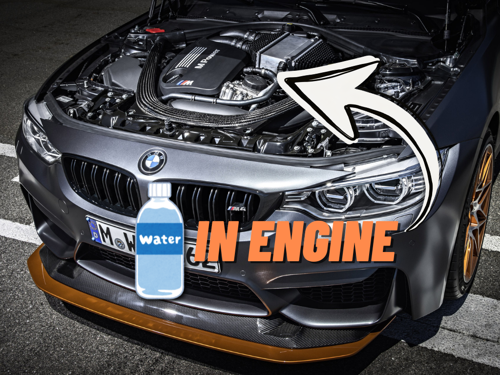

Water injection systems How water helps in extracting power from an engine
Spraying water into an engine may sound counterintuitive at first, but if done correctly, it can actually increase the efficiency and performance of the engine. BMW showcased this technology around a decade ago in its limited-run M4 GTS model. But before and after that, very few have ever given it a try.
So, if it works that well, why don't more cars use it? To answer that, it helps to first understand what problem water injection is trying to solve.

Why is it needed?
The short answer is to prevent engine "knock". But that in itself raises the question: what is knock, and how is it generally prevented in petrol-powered engines?
An engine is basically an air pump in the sense that it takes in air from the atmosphere, mixes it with fuel and compresses the mixture. A spark plug then ignites it to generate power, and the engine releases the burnt gases into the atmosphere via the exhaust pipe.
Knock occurs when some of the remaining air-fuel mixture ignites spontaneously and uncontrollably within the cylinder, after the spark plug has started igniting the mixture. This is undesirable because it leads to irregular power generation and disturbs the normal working of an engine, and in rare cases can also lead to component damage.
But why would an air-fuel mixture ignite by itself?
In a "naturally aspirated" engine, air enters the cylinders without being compressed by anything. It passes through the air filter and intake system on its way into the engine.
But if this air is compressed and made denser, more air can be packed into a cylinder of the same size. Add a bit more fuel to this mix, and more power can be generated from the same engine size.
One widely adopted way of doing this is by "turbocharging" an engine. A turbocharger uses high-speed exhaust gases to spin a turbine. This turbine drives a compressor, which compresses the fresh air going into the engine.
This means that the engine receives air at a higher pressure. While this allows the engine to make more power, it can also lead to higher temperatures and pressures inside the cylinders. An intercooler helps by cooling the compressed air before it reaches the engine. But under very demanding conditions, even this cooling may not be enough to prevent knock.
Conventionally, the engine's computer can help prevent knock and overheating by:
- Delaying the spark. This helps reduce knock, but it can also reduce efficiency: the engine may no longer ignite the mixture at the timing that produces the most useful power. Plus, delaying the spark can also raise exhaust gas temperatures, which can lead to component damage downstream.
- Adding extra fuel, often called fuel enrichment. As the extra fuel evaporates, it absorbs heat and helps cool the mixture. But using more fuel also hurts fuel economy.
How does Water Injection help?
Water injection provides another way to reduce temperatures and suppress knock, reducing the need for extra fuel and delayed spark timing. Another way of looking at it is that it can allow higher power output without placing as much thermal stress on engine components.
The idea is to spray a fine mist of water into the passage carrying air to the engine or, in some systems, directly into the combustion chamber. As the water evaporates, it absorbs heat and helps cool the mixture. This reduces the tendency of the remaining mixture to ignite on its own. The engine's computer still adjusts the spark and fuel, but the cooling gives it more flexibility in how it does so.
This water needs to be distilled and stored in a separate tank somewhere in the vehicle. It is then carried towards the engine via a dedicated pump and water lines. The system sprays it as a fine mist via dedicated Injection valves.
Follow the air, from turbo to cylinder
 AI
AIWhat are the benefits?
Water injection reduces the need to inject extra fuel to control knock, which is definitely a win for fuel consumption. It also allows the engine to operate with more turbo boost, that is, the pressure of the air supplied by the turbocharger, and can allow a higher compression ratio, meaning the mixture is squeezed more tightly before ignition. Both help with power and efficiency. Moreover, the cooling effect can reduce the creation of harmful NOx emissions, a group of nitrogen-containing gases produced during combustion.
According to BMW, its application increases power by 8% while decreasing fuel consumption by 8% as well.
What are the drawbacks?
One of the most obvious questions is: where can the water that will be injected into the engine be stored? And that is also the biggest issue with this technology.
The vehicle needs a separate water tank that users need to periodically refill with distilled water to prevent mineral deposits in the engine. In BMW's case, it put a 5-litre water tank in the boot. The tank needs to be topped up every few visits to the fuel station. And just like the coolant of an engine, the water needs protection against freezing at low temperatures, adding more components such as a heating system or requiring a water-ethanol mixture.
Apart from that, the additional components needed to route water from the tank into the engine, and the risk of corrosion on cylinder walls, also make it unsuitable for reliable use.
A useful idea with compromises
It should then not be a surprise that this concept has rarely been used in production. Even though it has great benefits in theory, they are not enough to cancel out the drawbacks of added components and the additional care required from users.
It was last used by BMW almost a decade ago in 2015 in its BMW M4, and that too only in the limited and flagship GTS model as a showcase of this innovative concept. Decades before that, Saab also offered this as an optional Sport Kit for its Turbo models.
But neither of them invented this system. After its first evaluation in the 1930s, it was applied in World War II planes to increase their power output at high altitudes and in combat conditions. It then briefly saw use by GM's Oldsmobile in the 1960s, and by Formula 1 teams like Renault in the 1980s, to help their small-capacity turbocharged engines.
Despite its clear benefits and gains, the fact that almost nobody else uses this today, and that few have used it in the past, shows that a good technology does not always translate into a good consumer product.
Sources
- Water injection as an enabler for increased efficiency at high-load in a direct injected, boosted, SI engine — Worm and colleagues, Michigan Technological University / SAE, 2017
- A review of water injection applied on the internal combustion engine — review article, 2019
- 5 litres of water for 500 horses — BMW M, 7 October 2015
- Experimental Study of Port Water Injection on GDI Engine Fuel Economics and Emissions — ACS Omega, 2024
- Literature Survey of Water Injection Benefits on Boosted Spark Ignited Engines — SAE technical paper, 2017
- Saab-Scania water injection sport kit fitting instructions — Saab-Scania, May 1981
- Towards High Efficiency Powertrains — Chalmers University of Technology research thesis, historical background
- Learn how BMW used water to make more horsepower in the M4 GTS — Motor Authority